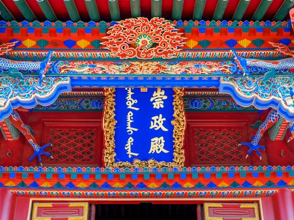
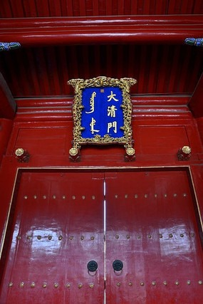
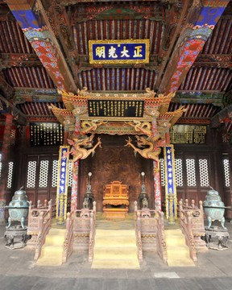
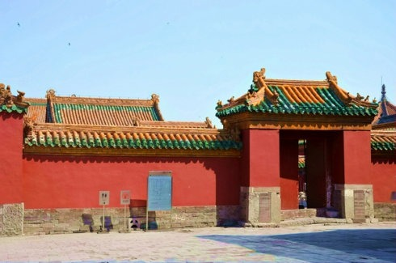
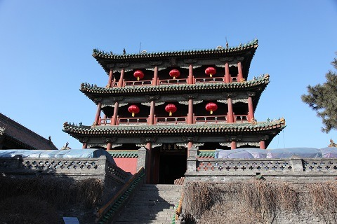
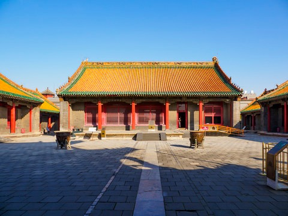
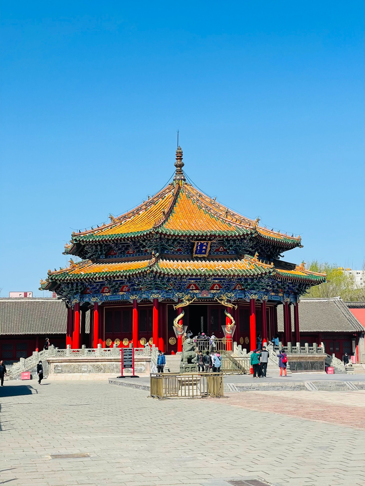
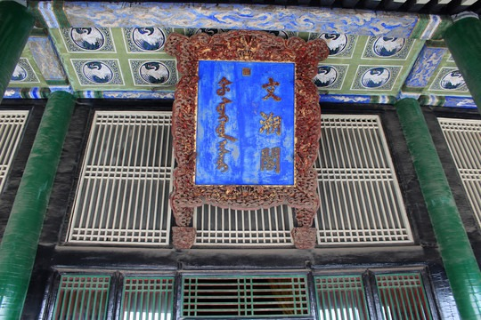
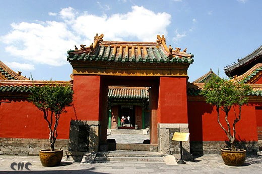

景点介绍

崇政殿
崇政殿在沈阳故宫内的中路前院正中，是清太宗皇太极时期的“金銮殿”，是沈阳故宫等级最高、最重要的建筑。此殿是清太宗日常临朝处理要务的地方，公元1636年，后金改国号为大清的大典就在此举行。乾隆、嘉庆、道光几位皇帝东巡盛京期间都曾坐在这里接受群臣朝贺。
整座大殿是全木结构，五间九檩硬山式，辟有隔扇门，前后出廊，围以石雕的栏杆。殿身的廊柱是方形的，望柱下有吐水的螭首，顶盖黄琉璃瓦镶绿剪边；殿柱是圆形的，两柱间用一条雕刻的整龙连接，龙头探出檐外，龙尾直入殿中，实用与装饰完美地结合为一体，增加了殿宇的帝王气魄。

大清门
沈阳故宫大清门是沈阳故宫的正门，又称“午门”，建于清太宗天聪六年（1632年）之前，是盛京皇宫中皇太极续修的早期建筑之一。崇德元年（1636年）正式定名为“大清门”，满语称“代青杜卡”（代青即大清，杜卡为门）。其建筑风格为五开间硬山式，屋顶覆黄琉璃瓦镶绿剪边，墀头饰五彩琉璃海水云龙及吉祥动物纹样，兼具满汉建筑特色。
作为沈阳故宫的正门，是文武百官候朝及出入宫殿的主要通道。
门上悬挂郭沫若题写的“沈阳故宫”门额，成为标志性入口。

大政殿
大政殿 是清沈阳故宫东路的主体建筑。位于东路北部正中，清沈阳故宫最早的建筑之一，建成于清太祖天命十一年（1626），供宫殿内举行大型庆典俯时使用，也是皇帝和诸王大臣议政审案之处。全高17.5米，进深、面阔均为21米，殿内面积401.12平方米。八角重檐攒尖琉璃瓦顶，大木架结构，下有高2.2米的砖石砌筑须弥座式台基。造型仿游牧民族的帐幄样式，殿顶的五彩琉璃宝顶和八名胡人力士色彩鲜艳，雕塑精美。檐下森结构装饰既有汉族传统的斗拱和盘柱双龙，又有藏传佛教建筑中常用的兽面、如意、连珠、蜂窝枋等，体现出多民族建筑艺术结合的特色。殿体八面均无砖砌墙壁，各有四扇红漆木制槅扇门，门心板上装饰金色浮雕降龙藻井，天花以红地金字的汉文福、禄、寿、喜、万和梵文吉祥文字加龙凤图案组成，辅以结构复杂的斗拱和龙纹雕刻，烘托出高中神圣的气氛

东所
东所清迁都北京后行宫中的皇太后居住之处，位于崇政殿至清宁宫诸宫殿东侧。冀南长105米，东西宽25料，围墙高2.7米，建于清乾隆十一年至十三年（1746-1748）。由南至北依次为琉璃瓦顶宫门一座、垂花门一座、颐和殿三间、介祉宫五间、敬典阁二层六间。

凤凰楼
凤凰楼是沈阳故宫中路的标志性建筑，建于后金天聪年间（1627-1635年），距今已有近400年历史，是盛京（沈阳）最高建筑，也是清代皇宫中唯一的歇山式楼阁。其以独特的建筑风格、历史地位和文化内涵著称，2021年与文溯阁共同入选“中国历史文化名楼”，成为关外首批获此殊荣的建筑之一。
坐落于4米高的青砖台基上，采用“三滴水歇山式围廊”结构，顶覆黄琉璃瓦镶绿剪边，三层楼阁分别饰有红地金龙彩画、梵文凤凰图案及“万寿无疆”篆书。
24级台阶象征二十四节气，体现满族高台筑屋的传统，兼具防御与风水意义。
作为皇太极及后妃的议事、读书、宴会场所，也是内宫区门户，下层为通道，中层为休闲区，上层可俯瞰盛京全景。
清军入关后曾存放《五朝圣训》、帝王画像等珍贵文物，后成为清帝东巡盛京的登临赋诗之地。
楼内悬挂乾隆御笔“紫气东来”九龙匾，寓意盛京为大清龙兴之地。
名列“盛京八景”之“凤楼晓日”“凤楼观塔”，是清代盛京城的景观制高点。
建于后金天聪年间，有近400年历史
歇山式楼阁，三层楼阁结构
黄琉璃瓦镶绿剪边，饰有金龙彩画
24级台阶象征二十四节气，满族传统
凤凰楼的历史功能与文化象征
皇太极及后妃的议事、读书、宴会场所
存放《五朝圣训》、帝王画像等珍贵文物
乾隆御笔“紫气东来”九龙匾
“凤楼晓日”“凤楼观塔”列入盛京八景

清宁宫
清宁宫 是清沈阳故宫中路北侧内廷区域主体建筑，位于帝、后居住区域北侧正中，是清太宗和皇后的寝宫。宫高12.53米，面阔24.51米，进深18.18米，面积444.5平方米。灰色青砖外墙，样式相互的木制门窗涂饰红漆。建于1627年至1632年间。其五间硬山木结构的建筑样式，是满族传统住宅的典范。室门不像通常那样开在正中，而是位于偏东的一间，使室内使用空间扩大。西侧三间搭设南西北三面相连的转弯坑，炕内设连接锅灶的烟道，以便烧火取暖，是长期生活在寒冷季节较长地区的满族人住宅中不可缺少的设施。连接炕内烟道的烟囱不设在房顶而是由室外西北侧地面起建，高逾房檐，状如小塔，也是满族住宅的特色之一。清宁宫除供帝、后居住外，还是皇宫内按满族信仰风俗举行萨满教祭祀的场所，室内现在仍保持当年祭神时的陈设。宫前院庭立有满族祭天时使用的索罗竿，是旧时满族住宅院落中的主要标志物。

十王亭
十王亭 即左翼王亭、右翼王亭和正黄旗、镶黄旗、正白旗、镶白旗、正红旗、镶红旗、正蓝旗、镶蓝旗“八旗亭”。位于大政殿前东、西两侧，是清代大政殿前举行集会时，王公大臣按所属旗分排列之处。由于八旗是军事、行政、生产合一的组织，在清迁都北京之前，八旗亭也是各旗官员处理本旗日常政务的衙署。各亭建筑样式相同，单檐歇山青布瓦顶默默出廊式，高8.6-9.2米不等。青砖墙壁，柱、门木质涂红漆，雀替等部位施彩绘。亭进深、面阔均为一间，外观为正方形，边长7.5-8.2米不等，面积112-132平方米，与大政殿均为类似帐幄的样式，共同组成具有骑射民族特点的建筑布局单元。

文溯阁
文溯阁 西路北侧区域主体建筑，是专用做存放中国古代最大的丛书——《四库全书》的著名藏书楼之一。设计仿中国浙江宁波藏书名楼天一阁，施工和装饰仍保持皇家建筑特色，使之在清沈阳故宫建筑群中富于独特的文化气息。阁高15.2米，面阔24.3米，进深14.8米，占地面积403平方米。屋顶使用黑色琉璃瓦，外墙白色，建筑彩绘和油饰都以蓝、绿等冷色为主调，与其他宫殿的红、黄、金色为主形成明显区别；彩画也以图书为主题而很少用龙凤图案，这些都是沿用中国古代防火的信仰观念，意在使阁中苦恼书免遭火灾。阁的格局根据《易经》中“天一生水，地六成之”的说法，在统一的大屋顶下分为六个开间，其外观二层而内部三层，除西侧楼梯间外都用来摆放书籍，清代特制的书架现仍完整地摆放在阁中。文溯阁东侧建有红墙黄琉璃瓦顶的碑亭，内置清高完弘历撰写的《御制文溯阁记》石碑，内容记述建阁的用意和过程

西所
西所 清迁都北京后皇帝东巡时的帝后行宫，位于崇政殿至清宁宫诸建筑之西。南北长110米，东西宽25米，围墙高207米，始建于清乾隆十一至十三年（1746-1748），由南到北依次为琉璃宫门一座，东、西值房各三间，垂花门一座，东配殿三间，迪光殿三间，东、西抄手游廊各一座，保极宫五间，直廊一座，继思斋九间，崇谟阁二层六间，七间房七间。